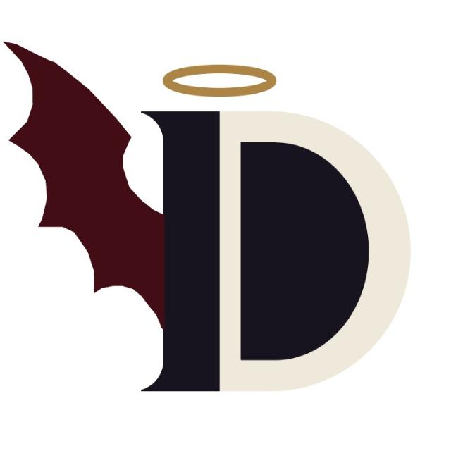

Sobre mim

Quem sou eu
Chamo-me Flávio Magalhães, tenho 21 anos e sou apaixonado por videojogos, com uma forte preferência por experiências imersivas de survival horror, ficção científica distópica e ação com atmosferas densas e desafios envolventes. No campo da música, o meu gosto transita com naturalidade pela intensidade e energia do rock alternativo, post-hardcore e faixas temáticas dinâmicas, mantendo-me sempre conectado a ritmos expressivos e marcantes.
Mais sobre mim:
No mundo dos videojogos, o teu gosto divide-se entre a tensão atmosférica e retrofuturista de títulos como Atomic Heart, Industria, Metro 2033 e Amnesia: The Bunker, e a adrenalina, precisão mecânica e momentum de franchises como Sonic the Hedgehog (com especial carinho por Sonic Adventure 2 e Sonic Frontiers), a ação tática de Hitman, Fortnite e até a velocidade de Gran Turismo 7. No plano musical, a tua playlist é dominada pela energia crua e melodias marcantes do rock, metal e post-hardcore, destacando bandas e projetos como Skillet, Sleeping With Sirens e Crush 40. Essa identidade sonora reflete-se claramente nas tuas faixas de eleição, que juntam peso instrumental, ritmo acelerado e forte carga emocional em temas como "An Ending Itself", "Hymn of Humankind", "Wolf in Sheep's Clothing", e "Build Our Machine".
Os meus hobbies
Hobbies:
- Ouvir música
- Ler
- Jogar videojogos
- Caminhar
Tarefas a realizar:
- Fazer projeto final
- Procurar estágio
- Ler o livro "Deus das moscas"
Links favoritos
- Sleeping With Sirens - Banda favorita
- An ending itself - Música favorita
- I have no mouth and i must scream - Livro favorito
O meu horário
| Hora | Segunda | Terça | Quarta | Quinta | Sexta |
|---|---|---|---|---|---|
| 09:00 - 13:00 | Nada | Nada | Nada | MD | Nada |
| 14:00 - 18:00 | EMP | PW | PDM III | Nada | CDJD |